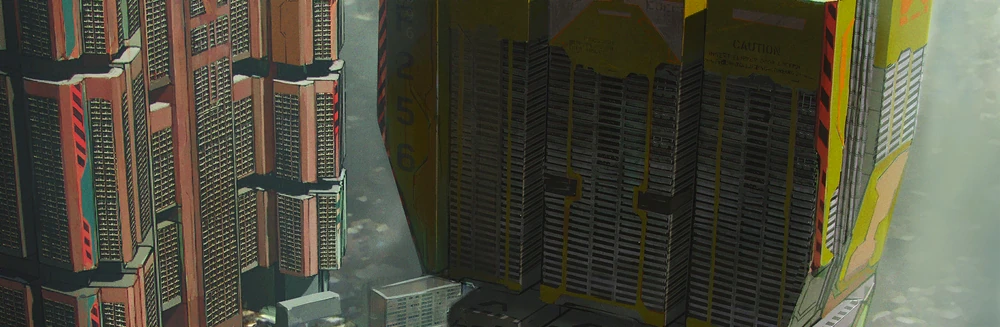
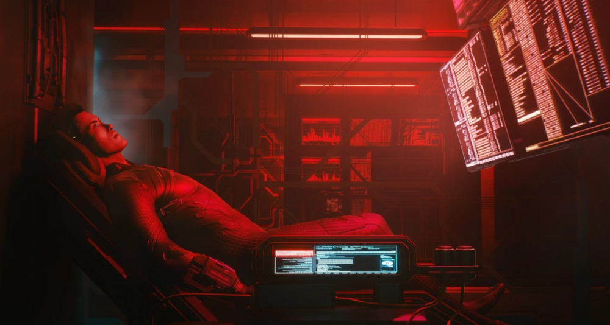
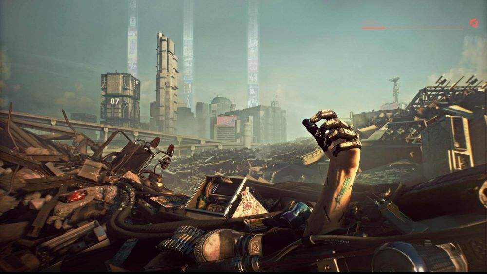
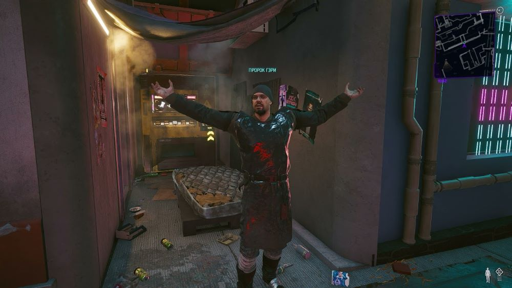
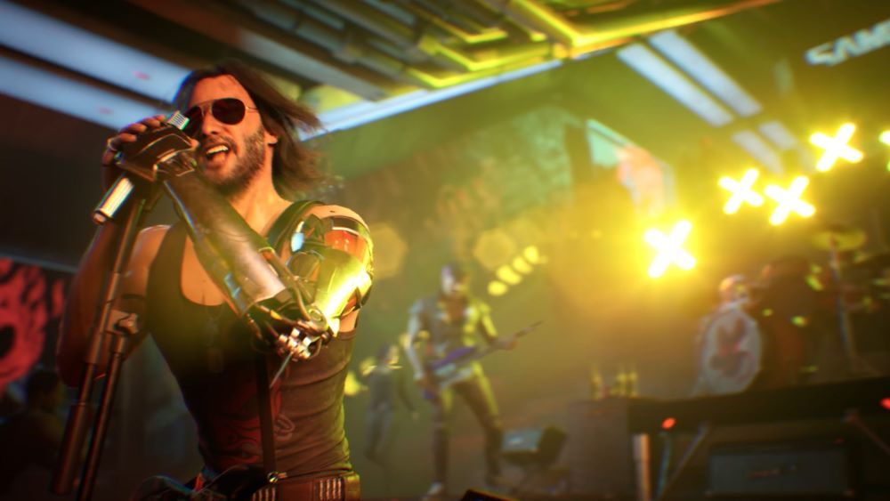
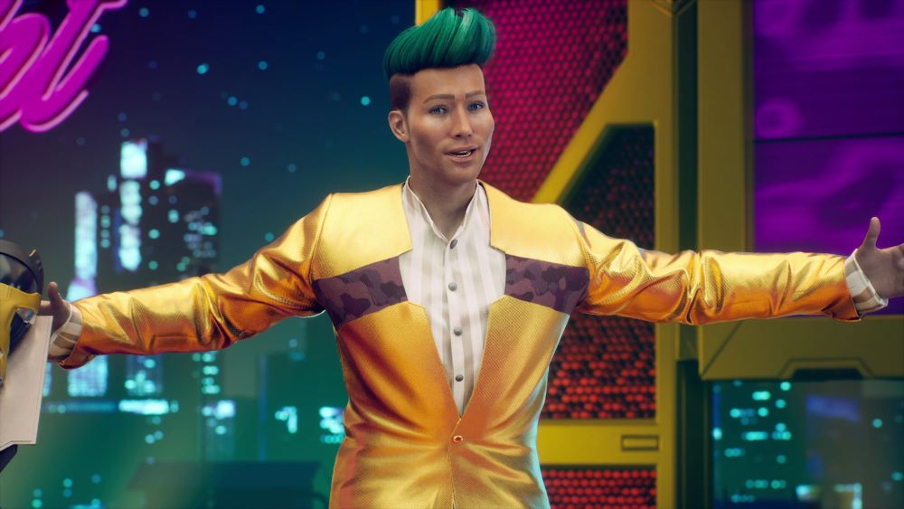

Добрый вечер, жители Найт-Сити и всей Ночной Мегаполис-Зоны! Добро пожаловать на "Новости Найт-Сити", ваш главный источник информации о происходящем в этом мире из стекла и стали. Я - Дмитрий и сегодня мы снова погружаемся в безудержный пульс этого удивительного мегаполиса.

Начнем с самого яркого аспекта Найт-Сити - его архитектуры! Среди огней и небоскребов вырастает новый символ прогресса - знаменитая "Кристаллическая башня", где современные технологии переплетаются с эстетикой будущего. Этот грандиозный проект обещает стать новым сердцем города и домом для тысяч людей. Подробности - в следующем репортаже.

Но как всегда в Найт-Сити, светлым будущим противостоит тень киберпреступности. Специализированные отделы полиции отчитываются о новых методах борьбы с хакерами и киберпреступниками, но они тщетно пытаются остановить волны кибернетических атак на корпорации и государственные учреждения. Какие новые угрозы поджидают нас в этом мире высоких технологий? Мы расскажем вам позже. Но, конечно же, не можем не упомянуть о последних достижениях в мире технологий! Импланты, виртуальная реальность, дроны - все это становится неотъемлемой частью нашей повседневной жизни. Однако, какова цена за этот прогресс? Мы обсудим это с экспертами в студии позже.

Но не все блестит в Найт-Сити. Вместе с технологическим прогрессом приходят и экологические проблемы. Загрязнение воздуха, исчезновение природных ресурсов и угроза климатических изменений становятся все более актуальными. Мы выясним, какие шаги предпринимаются для сохранения окружающей среды и обеспечения устойчивого развития в этом мегаполисе.

В тени блистательных небоскребов скрываются темные уголки бедности и социального неравенства. Какие проблемы сталкиваются жители нижних ярусов города? Мы поговорим с активистами и представителями благотворительных организаций, чтобы выяснить, что делается для улучшения ситуации и какие вызовы остаются нерешенными.

Киберпанк - это не только технологии и кибернетические имплантаты, но и целая культура! Мы поговорим с музыкантами, модельерами и художниками, чтобы узнать, какие тенденции в музыке, моде и искусстве определяют облик и дух Найт-Сити.

Таковы основные темы нашего сегодняшнего выпуска. Оставайтесь с нами, чтобы быть в курсе всех событий. Я - Дмитрий, желаю вам удачи в этом бурлящем мире Найт-Сити. До новых встреч!